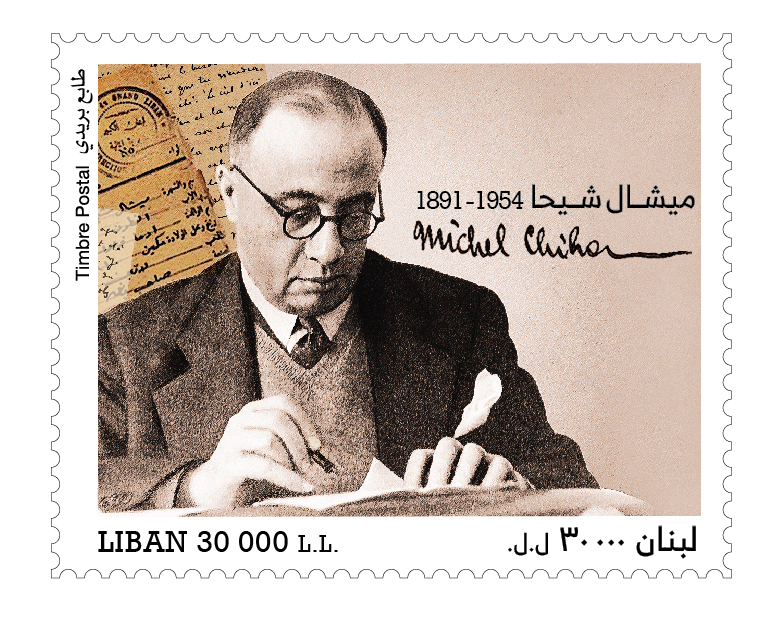

ميشال شيحا: الأب المؤسس للبنان الحديث
المحتويات
- النشأة والخلفية العائلية
- العودة إلى بيروت وتأسيس لبنان الكبير
- نشاطه في الإعلام واختيار علم لبنان
- استقلال لبنان والتزامه بتطويره
- المراجع
النشأة والخلفية العائلية
ميشال شيحا، الذي وُلد في عام 1891 في قرية بمكين، يُعدّ واحدًا من الشخصيات اللبنانية المؤثرة في التاريخ الحديث. منحدرًا من عائلة مسيحية عريقة في عالم المصرفية، كان والده مؤسس بنك "فراعون وشيحا" في عام 1876، مما جعل من ميشال خليفة طبيعيًا في هذا المجال. انضم إلى البنك العائلي عام 1907، ولكن الحرب العالمية الأولى دفعت به إلى القاهرة، حيث بدأ في دراسة القانون والنشاط السياسي.
العودة إلى بيروت وتأسيس لبنان الكبير
بعد نهاية الحرب العالمية الأولى، عاد شيحا إلى بيروت وتولى إدارة البنك في وقتٍ كان لبنان يعاني من آثار المجاعة والتدمير. في عام 1920، كان له دور محوري في تأسيس دولة لبنان الكبير. أما في عام 1926، فساهم بشكلٍ كبير في إعداد الدستور اللبناني، الذي يعدّ اليوم حجر الأساس لنظام البلاد السياسي.
نشاطه في الإعلام واختيار علم لبنان
إلى جانب عمله في السياسة، كان شيحا ناشطًا في الإعلام، حيث انضم إلى جريدة "الرياض" وأسس لاحقًا صحيفة "التايمز الشرقية" في عام 1941. كما كان من بين الشخصيات التي شاركت في اختيار علم لبنان، واقترح استخدام اللون الأحمر الفينيقي في تصميمه.
استقلال لبنان والتزامه بتطويره
في عام 1943، حصل لبنان على استقلاله، وكان شيحا مستشارًا رئيسيًا للرئيس بشارة الخوري. وعلى الرغم من التحديات السياسية، بقي شيحا ملتزمًا بتطوير لبنان حتى وفاته في عام 1954. مساهماته السياسية والاقتصادية والإعلامية تستمر في تشكيل لبنان الحديث، وذكراه لا تزال مصدر إلهام للأجيال الجديدة.
المراجع
michelchiha.org
chatgpt.com